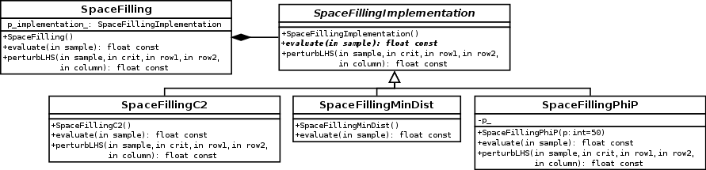
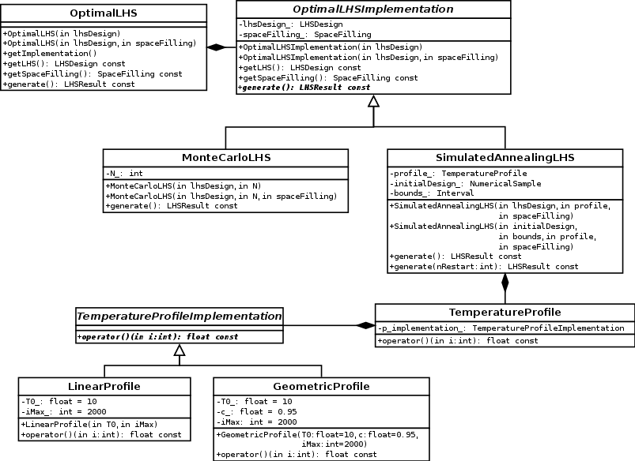
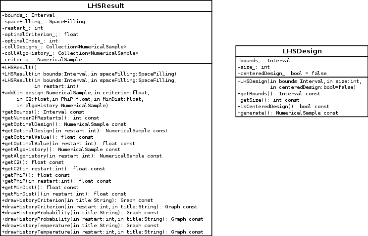

Architecture considerations¶
Dependencies¶
Several dependencies are needed in order to build the module:
- OpenTURNS
- Sphinx-doc (optional for this doc)
Compilation¶
cd otlhs
mkdir -p build && cd build
cmake \
-DCMAKE_INSTALL_PREFIX=$PWD/install \
-DOpenTURNS_DIR=$PWD/../../openturns/build/install/lib/cmake/openturns \
..
Source code structure¶
SpaceFilling¶
These classes implement different space filling criteria, which are consumed by
OptimalLHS algorithms.
OptimalLHS¶
This is the main class hierarchy. The OptimalLHS class is an abstract class,
inherited by MonteCarloLHS and SimulatedAnnealingLHS. They implement the
generate method, which returns an LHSResult instance.
LHSResult¶
The LHSResult class is returned by OptimalLHS.generate and contains algorithm
results. The add method is called by OptimalLHS (once if there is no restart,
and one plus one by restart otherwise), and informations can then be extracted by accessors.
If no restart argument is specified, informations about global optimum are retrieved. If a
restart number is provided, informations about this specific run are retrieved.